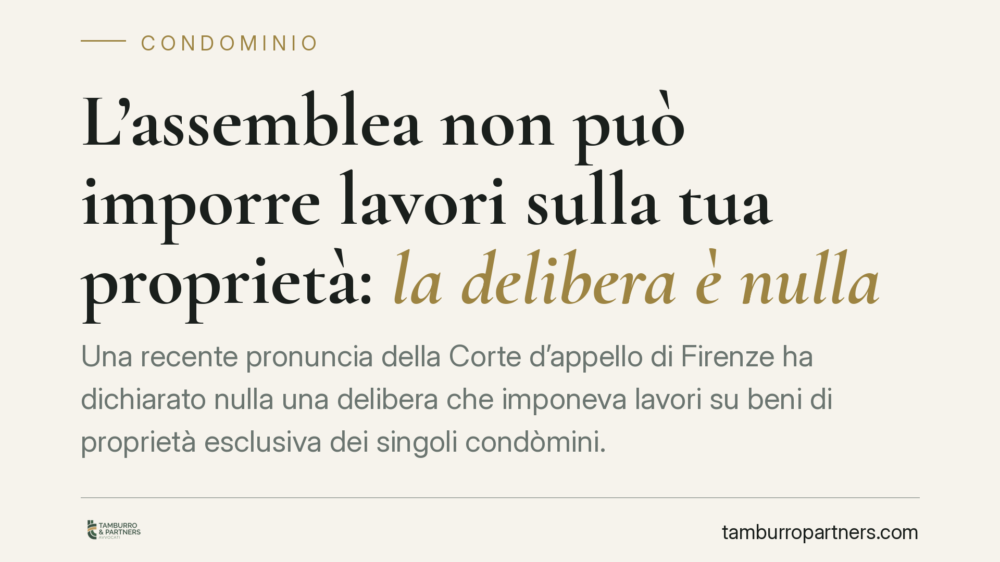

L'assemblea non può imporre lavori sulla tua proprietà: la delibera è nulla
Una recente pronuncia della Corte d'appello di Firenze ha dichiarato nulla una delibera che imponeva lavori su beni di proprietà esclusiva dei singoli condòmini. Il principio è consolidato: l'assemblea può deliberare sulle parti comuni, non sostituirsi al proprietario nella gestione del suo immobile. Chi subisce una delibera del genere ha strumenti precisi per reagire, senza limiti di tempo.

Il caso e il principio
La Corte d'appello di Firenze, in linea con l'orientamento consolidato della Cassazione, ha dichiarato nulla una delibera assembleare che imponeva l'esecuzione di lavori su beni appartenenti in via esclusiva ai singoli condòmini. Il ragionamento è lineare: l'assemblea è l'organo di gestione delle cose comuni, non ha alcun potere di disporre della proprietà privata dei partecipanti al condominio.
Una decisione di questo tipo eccede radicalmente le attribuzioni dell'assemblea. Non è un vizio di procedura: è un difetto che colpisce la sostanza stessa del potere esercitato.
Inquadramento normativo
Il perno della questione è la distinzione tra parti comuni e proprietà esclusive. L'art. 1117 cod. civ. individua i beni comuni per natura o destinazione; su questi, e solo su questi, l'assemblea esercita i poteri di gestione elencati dall'art. 1135 cod. civ. (approvazione delle opere, ripartizione delle spese, nomina dell'amministratore). Le innovazioni seguono le regole dell'art. 1120 cod. civ., sempre riferite alle parti comuni.
Quando l'assemblea pretende di decidere su un bene privato, si colloca fuori dal proprio perimetro. La logica proprietaria che governa la ripartizione delle spese — si pensi all'art. 1126 cod. civ. sul lastrico solare di uso esclusivo — conferma che l'appartenenza esclusiva resta un limite invalicabile.
Qui interviene la distinzione cardine tracciata dalle Sezioni Unite con la sentenza Cass. SU n. 9839/2021. Le delibere annullabili sono quelle affette da vizi formali o procedurali (convocazione irregolare, difetto di maggioranze): vanno impugnate entro trenta giorni ai sensi dell'art. 1137 cod. civ., decorsi i quali si consolidano. Le delibere nulle sono quelle prive degli elementi essenziali, con oggetto impossibile o illecito, oppure che incidono su diritti individuali dei condòmini estranei alla competenza assembleare. La nullità è imprescrittibile: può essere fatta valere in ogni tempo, da chiunque vi abbia interesse, e rilevata anche d'ufficio dal giudice.
Una delibera che dispone lavori su proprietà esclusive ricade proprio in quest'ultima categoria.
Implicazioni pratiche
Per il singolo condòmino il primo dato è rassicurante: non c'è alcun termine da rispettare per far accertare la nullità. Anche a distanza di anni la delibera resta improduttiva di effetti.
Attenzione però a un punto spesso frainteso. L'assenza di un termine per l'azione di accertamento non significa che si possa attendere passivamente. Se il condominio avvia i lavori sulla base di una delibera nulla, il danno si produce nell'immediato. In questi casi lo strumento per bloccare l'esecuzione non è la causa di merito — che ha tempi lunghi — ma un provvedimento cautelare, ad esempio il ricorso d'urgenza ex art. 700 cod. proc. civ., diretto a sospendere le opere in attesa della decisione.
Va distinta poi la nozione di intervento strettamente funzionale e necessario. La giurisprudenza ammette che l'assemblea disponga opere che, pur incidendo marginalmente su parti private, siano indispensabili per conservare o mettere in sicurezza un bene comune (ad esempio l'accesso a una colonna montante che attraversa un appartamento). È un'eccezione di stretta interpretazione: non copre lavori che il condominio ritenga semplicemente opportuni o migliorativi.
Un profilo ulteriore riguarda l'amministratore. Chi dà esecuzione a una delibera nulla non è coperto da alcuna copertura formale: risponde a titolo personale dei danni cagionati ai condòmini per l'attività compiuta in assenza di un valido titolo deliberativo.
Cosa fare in concreto
- Verifica l'oggetto della delibera. Accerta se le opere ricadono su parti comuni (art. 1117 cod. civ.) o sul tuo immobile: solo nel secondo caso opera la nullità.
- Distingui gli strumenti. L'azione di accertamento della nullità non ha termine; se però i lavori stanno per iniziare, valuta un ricorso cautelare d'urgenza per sospenderli senza attendere il merito.
- Formalizza il dissenso. Metti a verbale la contrarietà e invia una diffida scritta all'amministratore, contestando il difetto di potere dell'assemblea.
- Conserva la documentazione. Verbale, convocazione, eventuali preventivi e comunicazioni sono la base probatoria di qualsiasi iniziativa.
- Richiedi un vaglio tecnico-legale prima di agire, per qualificare correttamente il vizio e scegliere lo strumento adeguato.
Disclaimer
Contributo informativo a cura di Tamburro & Partners - Avv. Giuseppe Tamburro. Non costituisce parere legale.
Ogni condominio ha una storia a sé.
Se gestisci un'amministrazione e vuoi un confronto su una specifica questione condominiale, scrivi allo studio. Ti rispondiamo entro un giorno lavorativo.